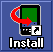

Install the following files directly to SD/MMC card on your device:
Noah should find the database on the external memory card upon startup.
Launch Palm Desktop application and press "Install" button on the left (  )
On the windows that appears, press "Add..." button, then navigate to the folder where you unpacked Noah. Select "noah_pro" and press "Open" button in the file dialog.
Press "Add" button again, navigate to "db_ex" director, select "wn_full_ex.pdb" and press "Open" button.


Now you have to direct Noah and the database to SD/MMC card. Press "Change Destination.." button:
Change installation point of both noah_pro.prc and wn_ex_full.pdb to SD/MMC by highlighting them (with a mouse click) and pressing ">>" button:
You should see that they are now going to be installed on SD/MMC card. Press "OK" button:
Verify that destination is SecureDigital (SD) Card and press "Done" button. Perform Hot Sync operation.
Noah should now find and use the database on Palm m105/m125/m500/m505 SD/MMC external memory card.